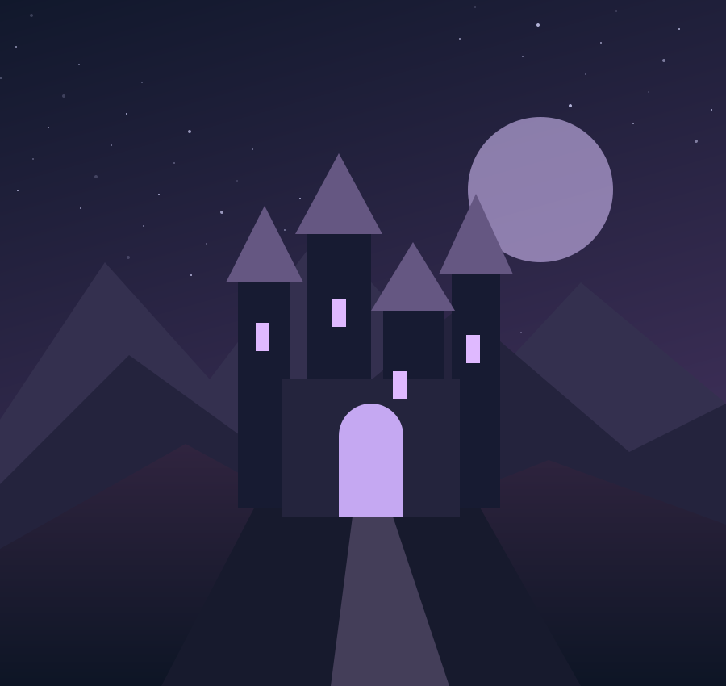
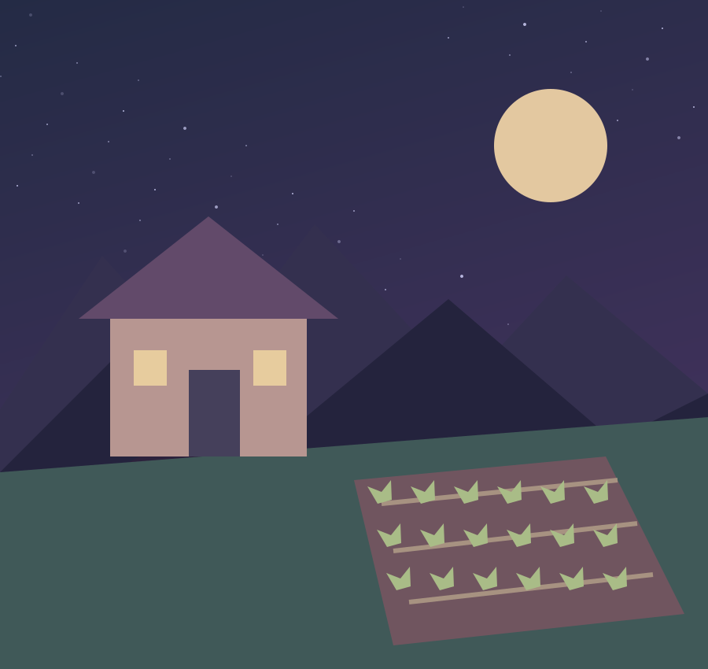

Análises editoriais descritivas, sem alegação de testes pessoais. Não atribuímos notas: a melhor escolha depende de como você gosta de jogar.

EXPLORAÇÃO / AÇÃO
Hollow Knight
O encanto de Hollow Knight está na relação entre mapa, movimento e curiosidade. O reino subterrâneo convida a revisitar caminhos quando novas habilidades ampliam as possibilidades de exploração.
- O que se destaca
- Ambientes conectados, identidade visual marcante e combates que pedem leitura de padrões.
- O que considerar
- A orientação discreta e a necessidade de repetir confrontos podem frustrar quem prefere objetivos sempre sinalizados.
- Combina com você se…
- Descobrir uma passagem escondida é tão recompensador quanto vencer um chefe.
Conhecer o jogo no site oficial ↗
SIMULAÇÃO / RPG
Stardew Valley
Uma fazenda é o ponto de partida para uma rotina que mistura cultivo, pesca, mineração e relações com os habitantes da vila. A liberdade para definir prioridades é uma parte central da experiência.
- O que se destaca
- Objetivos de curto e longo prazo convivem: colher hoje e planejar a próxima estação podem ser igualmente satisfatórios.
- O que considerar
- O tempo diário limitado exige escolhas. Tentar fazer tudo de uma vez pode transformar uma rotina tranquila em uma lista de obrigações.
- Combina com você se…
- Você gosta de construir progresso aos poucos e inventar suas próprias metas.
Conhecer o jogo no site oficial ↗